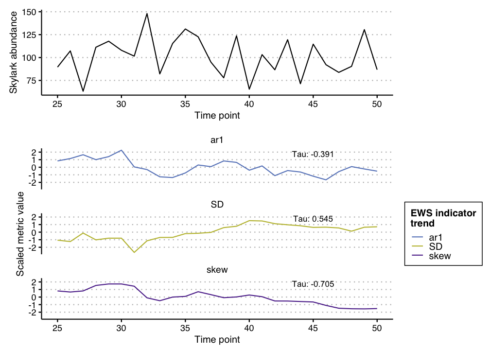
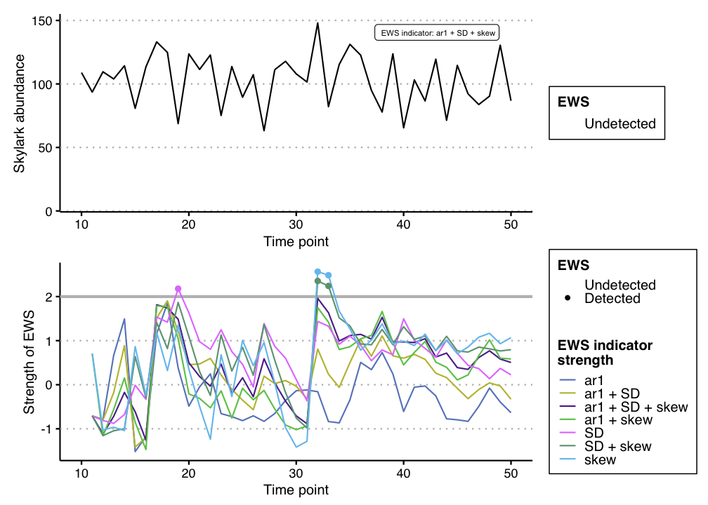
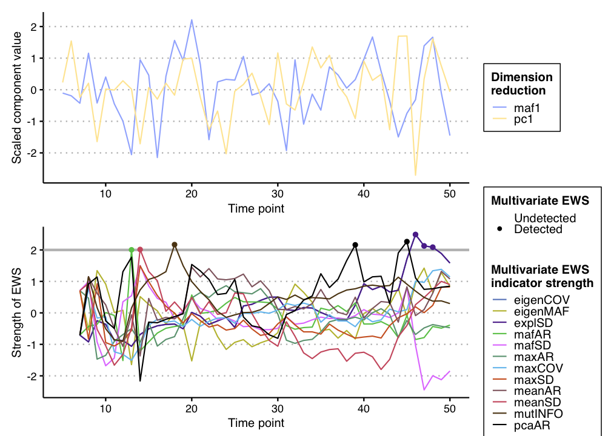

EWSmethods is a user friendly interface to various methods of performing Early Warning Signal (EWS) assessments. This R package allows the user to input univariate or multivariate data and perform either traditional rolling window (e.g. Dakos et al. 2012) or expanding window (Drake and Griffin, 2010) EWS approaches. Publication standard and ggplot inspired figures can also be generated during this process. EWSmethods also provides an R interface to EWSNet, a deep learning modelling framework for predicting critical transitions (Deb et al. 2022).
Installation
You can install the development version of EWSmethods from GitHub with:
# install.packages("devtools")
# devtools::install_github("duncanobrien/EWSmethods")Be aware, due to the large file sizes of the EWSNet model weights, the size of the package is ~100MB.
Getting Started
The remainder of this page will introduce the two primary ways of interacting with EWSmethods for your critical transition forecasting needs. For specific function help, please refer to the Reference page.
1. Early Warning Signals
Early warning signals are a collection of summary statistics that attempt to characterise the phenomenon of critical slowing down (CSD). As a system approaches a tipping point (or bifurcation), it takes longer and longer for it to recover when it is pushed away from stability (Dakos et al. 2012). This increased return rate is a manifestation of CSD and can be detectable in data. EWSmethods provides a collection of these summary statistics which can be calculated from either univariate or multivariate time series using uniEWS() and multiEWS() respectively.
The univariate approach
Imagine we have 50 years of monitoring data for a local population of skylarks (Alauda arvensis) and have measured mean body mass data throughout this period as well.
We could calculate either rolling or expanding window EWSs using the abundance data via uniEWS() but decide to initially focus on rolling windows. We would therefore parameterise the function to do so as below:
set.seed(125) #seed to ensure reproducible results
skylark_data <- data.frame(time = seq(1:50), abundance = rnorm(50,mean = 100,sd=20), trait = rnorm(50,mean=40,sd=5)) #dummy skylark dataset
ews_metrics <- c("SD","ar1","skew") #the early warning signal metrics we wish to compute
roll_ews <- uniEWS(data = skylark_data[,1:2], metrics = ews_metrics, method = "rolling", winsize = 50, ggplotIt =TRUE, y_lab = "Skylark abundance") #lets use a rolling window approach
roll_ews$EWS$cor #return the Kendall Tau correlations for each EWS metric
#> SD ar1 skew
#> tau 0.5446154 -0.3907692 -0.7046154We can then use the resulting figures to identify oncoming transitions. In this case, we expect no transition as the data is randomly sampled from a normal distribution and this is evident in the Kendall Tau values, with no strong positive correlation with time:

Alternatively, we may be more interested in expanding windows as that approach standardises the changing EWS metrics over time and therefore allows the strength of multiple signals to be combined. We could achieve this using the following code:
exp_ews <- uniEWS(data = skylark_data[,1:2], metrics = ews_metrics, method = "expanding", burn_in = 10, threshold = 2, tail.direction = "one.tailed", ggplotIt =TRUE, y_lab = "Skylark abundance") #lets use a rolling window approach
#> Warning: Removed 7 row(s) containing missing values (geom_path).
#> Warning: Removed 7 rows containing missing values (geom_point).
head(exp_ews$EWS) #return the head of the EWS dataframe
#> time metric.score metric.code rolling.mean rolling.sd threshold.crossed
#> 1 10 0.0000000 ar1 0.0000000 NA 0
#> 2 11 -0.7071068 ar1 -0.3535534 0.5000000 0
#> 3 12 -0.9223669 ar1 -0.5431579 0.4825449 0
#> 4 13 -0.1500572 ar1 -0.4448827 0.4403012 0
#> 5 14 0.8428688 ar1 -0.1873324 0.6906950 0
#> 6 15 -1.8668306 ar1 -0.4672488 0.9229121 0
#> count.used str
#> 1 108.91249 NA
#> 2 93.56813 -0.7071068
#> 3 109.56960 -0.7858522
#> 4 103.92341 0.6695997
#> 5 114.29655 1.4915428
#> 6 80.79726 -1.5164845And again, we can then use the resulting figures to identify oncoming transitions. Whilst we have some trangressions of the 2σ threshold, we only consider these signals “warnings” if two or more consecutive signals are identified (Clements et al. 2019).

A second benefit of the expanding window approach is that additional information can be used to improve the reliability of the assessment. Including trait information has been shown to decrease the likelihood of both false positive and false negative signals (Clements and Ozgul, 2016; Baruah et al. 2019) and therefore should be considered if possible.
For example, in our hypothetical skylark dataset, we have measured average population body mass. This data can then be delivered to the univariate_EWS_wrapper() function in EWSmethods, using the trait argument.
trait_metrics <- c("SD", "ar1", "trait")
exp_ews_trait <- uniEWS(data = skylark_data[,1:2], metrics = trait_metrics, method = "expanding", burn_in = 10, threshold = 2, tail.direction = "one.tailed", ggplotIt =TRUE, y_lab = "Skylark abundance",
trait = skylark_data$trait, trait_lab = "Body mass (g)", trait_scale = 5)
#> Warning: Removed 7 row(s) containing missing values (geom_path).
#> Warning: Removed 7 rows containing missing values (geom_point).
The multivariate approach
If we had data from multiple timeseries/measurements of the same system, we might be interested in multivariate early warning signals. These indicators exploit either dimension reduction techniques (such as Principal Component Analysis) or community average estimates to give an overall measure of system resilience (see Weinans et al. 2021 for an overview of each indicator).
Here we’ve constructed another hypothetical dataset representing five related populations of Caribbean reef octopus (Octopus briareus) in Bahamian salt water lakes (O’Brien et al. 2020) and are interested in assessing the resilience of this metapopulation. The following code shows how we would achieve this using the EWSmethods function multiEWS().
set.seed(123)
octopus_spp_data <- matrix(nrow = 50, ncol = 5)
octopus_spp_data <- as.data.frame(cbind("time"=seq(1:50),sapply(1:dim(octopus_spp_data)[2], function(x){octopus_spp_data[,x] <- rnorm(50,mean=500,sd=200)}))) #create our hypothetical, uncollapsing ecosystem
oct_exp_ews <- multiEWS(data = octopus_spp_data, method = "expanding", threshold = 2, tail.direction = "one.tailed", ggplotIt = TRUE) #lets use an expanding window approach
#> Warning: Removed 24 row(s) containing missing values (geom_path).
#> Warning: Removed 24 rows containing missing values (geom_point).The figure again shows that one multivariate EWS indicator has expressed a warning, but that overall, no transition is anticipated.

2. EWSNet
The other half of EWSmethods allows you to query the Python-based EWSNet via an easy to use R workflow. Here is a simple example that details how to first prepare your R session to communicate with Python (using the excellent reticulate R package) and then calls EWSNet to assess the probability of a transition occurring in the skylark time series. This is a two step process where we must a) call ewsnet_init() before b) using ewsnet_predict().
bypass_reticulate_autoinit() #edits your global R environment with the line: RETICULATE_AUTOCONFIGURE = "FALSE". This ensures 'reticulate' does not load a python environment until 'ewsnet_init()' has been called
#> RETICULATE_AUTOCONFIGURE already set to FALSE
library(reticulate)
ewsnet_init(envname = "EWSNET_env") #prepares your workspace using 'reticulate' and asks to install Anaconda (if no appropriate Python found) and/or a Python environment before activating that environment with the necessary Python packages
#> conda env EWSNET_env found. Would you like to activate it and install necessary
#> packages? (y/n)
#> Aborting
reticulate::use_condaenv("EWSNET_env") #redundant step necessary for RMarkdown
print(reticulate::py_config()) #confirm that "EWSNET_env" has been loaded
#> python: /Users/ul20791/Library/r-miniconda-arm64/envs/EWSNET_env/bin/python
#> libpython: /Users/ul20791/Library/r-miniconda-arm64/envs/EWSNET_env/lib/libpython3.8.dylib
#> pythonhome: /Users/ul20791/Library/r-miniconda-arm64/envs/EWSNET_env:/Users/ul20791/Library/r-miniconda-arm64/envs/EWSNET_env
#> version: 3.8.13 | packaged by conda-forge | (default, Mar 25 2022, 06:05:16) [Clang 12.0.1 ]
#> numpy: /Users/ul20791/Library/r-miniconda-arm64/envs/EWSNET_env/lib/python3.8/site-packages/numpy
#> numpy_version: 1.23.1
#>
#> NOTE: Python version was forced by use_python function
py_packages <- reticulate::py_list_packages() #list all packages currently loaded in to "EWSNET_env"
head(py_packages)
#> package version requirement channel
#> 1 absl-py 1.1.0 absl-py=1.1.0 pypi
#> 2 alabaster 0.7.12 alabaster=0.7.12 pypi
#> 3 astunparse 1.6.3 astunparse=1.6.3 pypi
#> 4 babel 2.10.3 babel=2.10.3 pypi
#> 5 bzip2 1.0.8 bzip2=1.0.8 conda-forge
#> 6 ca-certificates 2022.6.15 ca-certificates=2022.6.15 conda-forge
skylark_ewsnet <- ewsnet_predict(skylark_data$abundance, noise_type = "W", ensemble = 25, envname = "EWSNET_env") #perform EWSNet assessment using white noise and all 25 models. The envname should match ewsnet_init()
print(skylark_ewsnet)
#> pred no_trans_prob smooth_trans_prob critical_trans_prob
#> 1 Critical Transition 0.0001411155 0.2852249 0.7146339References
Baruah, G., Clements, C.F., Guillaume, F. & Ozgul, A. (2019) When do shifts in trait dynamics precede population declines? The American Naturalist, 193, 633–644. doi:10.1086/702849
Clements, C.F. & Ozgul, A. (2016) Including trait-based early warning signals helps predict population collapse. Nature Communications, 7, 10984. doi:10.1038/ncomms10984
Clements, C.F., McCarthy, M.A. & Blanchard, J.L. (2019) Early warning signals of recovery in complex systems. Nature Communications, 10, 1681. doi:10.1038/s41467-019-09684-y
Dakos V., Carpenter S.R., Brock W.A., Ellison A.M., Guttal V., et al. (2012) Methods for detecting early warnings of critical transitions in time series illustrated using simulated ecological data. PLOS ONE, 7, 7:e41010. doi:10.1371/journal.pone.0041010
Deb S., Sidheekh S., Clements C.F., Krishnan N.C. & Dutta P.S. (2022) Machine learning methods trained on simple models can predict critical transitions in complex natural systems. Royal Society Open Science, 9, 211475. doi:10.1098/rsos.211475
Drake, J. & Griffen, B. (2010) Early warning signals of extinction in deteriorating environments. Nature, 467, 456–459. doi:10.1038/nature09389
O’Brien, D.A., Taylor, M.L., Masonjones, H.D., Boersch-Supan P.H. & O’Shea, O.R. (2020) Drivers of octopus abundance and density in an anchialine lake: a 30 year comparison. Journal of Experimental Marine Biology and Ecology, 528, 151377. doi:10.1016/j.jembe.2020.151377
Weinans, E., Quax, R., van Nes, E.H. & van de Leemput, I.A. (2021) Evaluating the performance of multivariate indicators of resilience loss. Scientific Reports, 11, 9148. 10.1038/s41598-021-87839-y